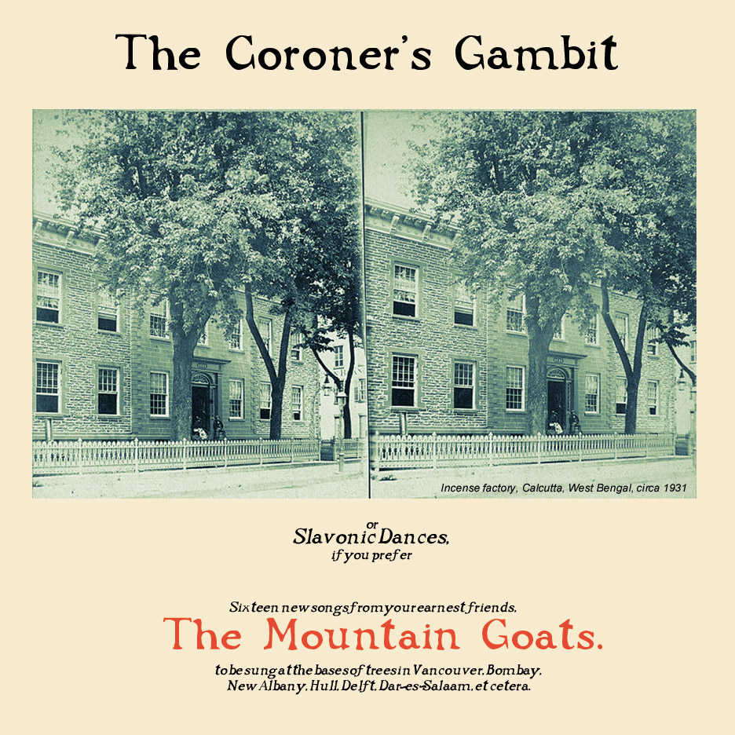

the coroner's gambit

title: the coroner's gambit
chords: none yet.
cool quotes: They have been talking about a journey into the interior. They know the dangers and yet they have already decided upon it. No one can talk them out of it. It is clear that their minds are made up. Their knapsacks are packed. Their guides have been chosen. They remain cool to suggestions. They smile enigmatic smiles. They no longer answer questions. -- Carol EMSHWILLER. "Being Mysterious Strangers from Distance Shores" (from side 2 of the vinyl)
songs:
jaipur
elijah
seneca's trick mirror
island garden song
the coroner's gambit
baboon
scotch grove
horseradish road
family happiness
onions
"bluejays and cardinals"
shadow song
there will be no divorce
insurance fraud #2
alphonse mambo
we were patriots
please mail any questions/comments/complaints, or just notes hello to:nall@themountaingoats.net